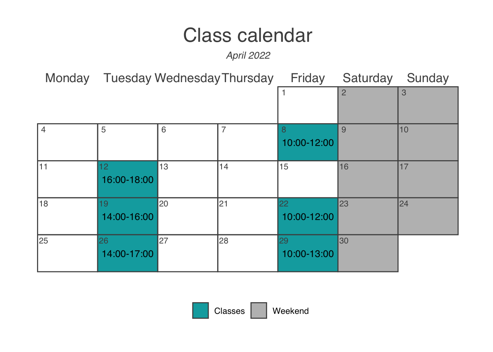
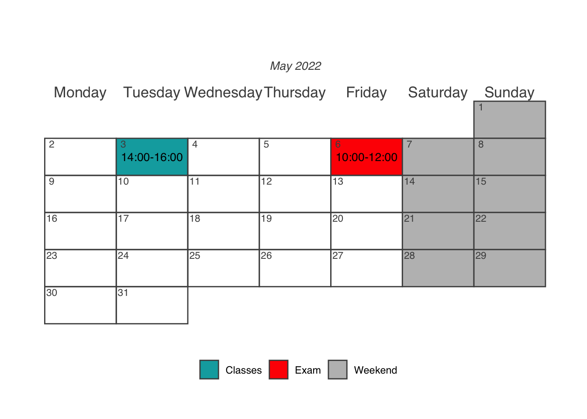

Introduction
Welcome to class! These web-pages contain all the information you need to accomplish your class work for Animal Tracking nella Biologia della Conservazione.
The instructor

- I am a Research Associate working @ University of Rome “Tor Vergata” and I am interested in using ecological and molecular tools to inform conservation actions
- I was a PostDoc for 5 years with the San Diego Zoo Wildlife Association
- I got a PhD in Conservation Genetics @ Mississippi State University
- I have been doing research in Conservation Biology since 2010
- I got my bachelor and master degree @ University of Rome “Tor Vergata”
Course info
This is an discretionary course for master level students enrolled in the “Biologia Evoluzionistica, Ecologia e Antropologia Applicata” degree at the University of Rome Tor Vergata. It is worth 2 CFU for a total of 16 hours to be administered in person (or remotely, depending on the evolution of the pandemic) over 8 weeks.
All information related to this course (including last minute changes and updates of the material) will be available on this website.
NOTE: it is a student’s responsibility to check periodically this website for any update!!
NOTE: attendance is mandatory!!
The course will be thought in Italian unless international students are present. In this latter case the course will be thought in English.
At the end of the course students will have 2 weeks to prepare for a final examination. The details about the exam will be released later on these web-pages.
Course overview
The course introduces students to one of the fundamental aspects of conservation biology: long-term marking and tracking techniques of animal species, with a particular focus on endangered species. Classic methodologies of capture-mark-recapture will be presented. Students will also be exposed to more modern techniques including the use of molecular tags and technologically advanced systems based on satellite tracking. Methodologies to collect significant environmental data (such as remote sensing and satellite image analysis) will also be presented The course also introduces methods of organizing, managing, and analyzing the data through the use of relational databases, such as MySQL, and statistical software such as R.
The analysis and discussion of the scientific literature will introduce participants to the benefits of applying animal tracking and spatial ecology to the conservation and management of endangered species.
The course combines lectures and practical computer exercises. The lectures will be supported by the use of audiovisual teaching material. The teaching and support materials for the course will be available to students through this website.
Pre-requisites
There are no specific pre-requisites to attend this class. Nevertheless, many of the methodologies and topics that we will discuss are borrowed from Conservation Biology. A little experience in such field is, therefore, advisable.
Throughout the course students will be extensively exposed to various software and web-tools. It is necessary that each student has his/her own laptop in order to better follow the various demonstrations/exercise that will take place in class. Should a student not have a portable computer, all code and demonstrations will be up-loaded on this website and are available for practice on a desktop computer.
Calendar
Below is a preliminary calendar of all appointments. We shall meet in person at the Experimental Ecology and Aquaculture Laboratory in Via Cracovia 1, 00133 Rome.
Be aware that these dates/times/locations may change due to unforeseeable circumstances and to the evolution of the COVID-19 pandemic. Should classes in person not be possible, a link for a Microsoft-Teams-class will be released.


Content
The specific content of each class will be progressively released under the Classes tab (look up, in the site navigation bar). Below is a list of the topics we will be covering during the course:
- Lesson 1 (April 8, 2022)
- Opening questionnaire;
- the basics of Animal Tracking;
- setting up your computers;
- get you acquainted with the most commonly used spatial data objects and their features;
- get an overview of some Coordinate Reference Systems (CRSs);
- paper assignment.
- Lesson 2 (April 12, 2022)
- paper review and discussion;
- CRSs;
- telemetry e GPS;
- making maps in R;
- databases and Movebank;
- paper assignment.
- Lesson 3 (April 19, 2022)
- paper review and discussion;
- estimating home ranges;
- environmental data;
- exercise assignment
- paper assignment.
- Lesson 4 (April 22, 2022)
- review exercise;
- paper discussion;
- home range with AKDE;
- paper assignment.
- Lesson 5 (April 26, 2022)
- corridor dweller VS corridor passers;
- paper discussion;
- Resource Selection Functions (RSFs);
- paper assignment.
Students with disabilities
Please let me know if you require special accommodations related to this class so that I can assist in this regard.